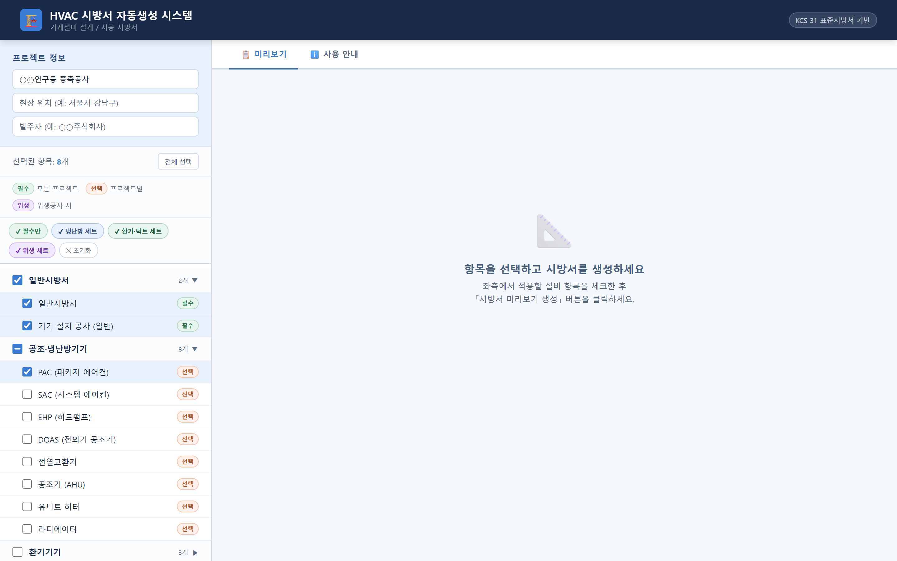
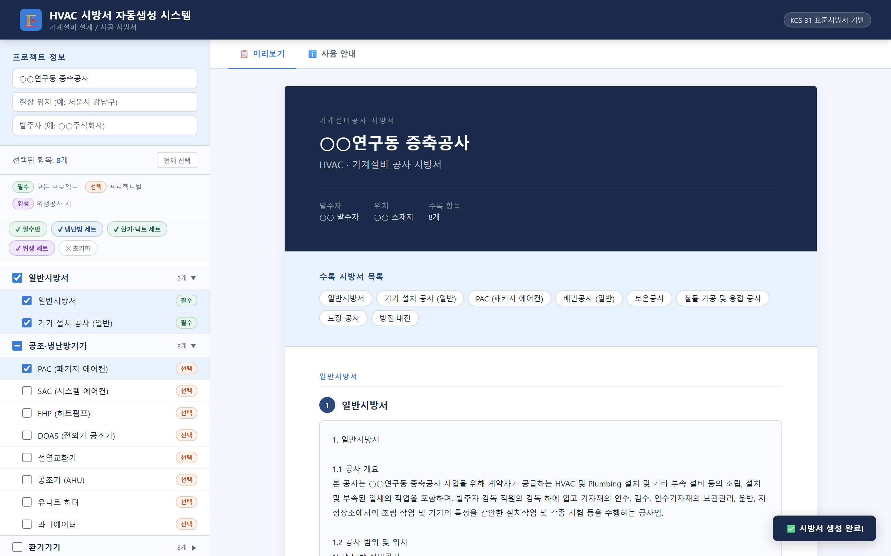

HVAC 시방서 자동생성
KCS 31 표준시방서 기반. 이번 프로젝트에 해당하는 설비만 선택하면, 편집할 필요 없는 Word 시방서가 나옵니다.
항목을 선택하면, 서식과 목차는 앱이 만듭니다.
무엇이 대체되나
② 적용 항목 선택
공조·냉난방기기, 환기기기, 배관, 보온, 덕트, 위생기구까지 분류별로 정리되어 있습니다. 항목마다 필수 · 선택 · 위생 구분이 붙어 있어 빠뜨리면 안 되는 것이 무엇인지 바로 보입니다. 「냉난방 세트」 같은 버튼으로 한 번에 고를 수도 있습니다.

🔍 클릭하면 크게 볼 수 있습니다
수록 항목
40개 이상
분류별로 접고 펼치기
빠른 선택
세트 4종
필수 · 냉난방 · 환기덕트 · 위생
③ 생성 및 다운로드
선택한 항목만으로 표지와 수록 목록이 만들어지고, 본문 목차가 다시 매겨집니다. 공사 개요 문장에는 입력한 프로젝트명이 그대로 들어갑니다. 화면에서 확인한 뒤 Word(.docx) 로 내려받아 그대로 제출하면 됩니다.

🔍 클릭하면 크게 볼 수 있습니다
기준
KCS 31
표준시방서 기반 문안
출력
Word (.docx)
서식 손볼 것 없이 제출
작동 모습
연출된 시연 장면입니다. 실제로 만들어 보려면 무료로 바로 쓰기.